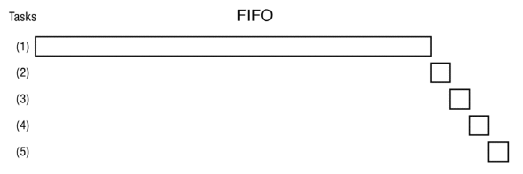
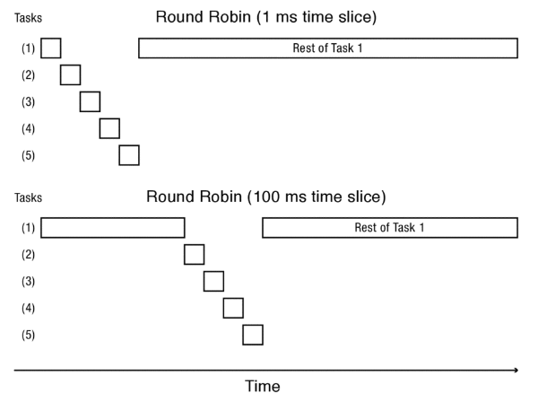
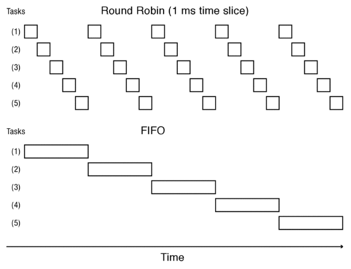
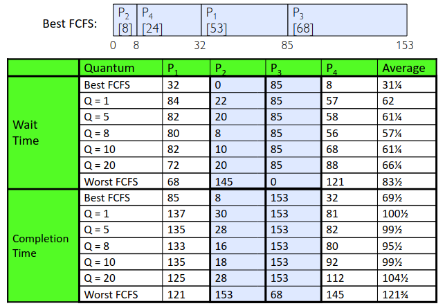

Scheduling
Table of Contents
1. Scheduling Policies
Scheduling policies wish to:
- Minimize elapsed time to do an operation (response time)
- Maximize operations per second (throughput)
- Share CPU among users in some equitable way (fairness)
These may often be in conflict with each other, and it is the job of the scheduling policy to choose a balance of optimizations.
1.1. First-Come First-Served (FCFS) Scheduling
First-come first-served scheduling is also known as “First-In First-Out” (FIFO) or “run until done” scheduling. In early systems, FCFS scheduling meant that one program was scheduled until it was done (including I/O). Now, this means that the program keeps the CPU until the thread blocks.
This scheduling policy is simple and good at maximizing usage of the CPU, but it is not particularly fair to programs themselves. The convoy effect may occur, where a shorter program is stuck behind the execution of a very long program: with FCFS non-preemptive scheduling, “convoys” of small tasks tend to build up when a large one is running:

1.2. Round Robin (RR) Scheduling
In the round robin scheduling scheme, each process gets a small unit of CPU time (the time quantum), usually 10-100 milliseconds. After the time quantum expires, the process is preempted and added to the end of the ready queue. Therefore, if there are \(n\) processes in the ready queue with a time quantum of \(q\) time units, then no process waits more than \((n-1)q\) time units:

Choosing \(q\) is important here: if \(q\) is too large, then it just becomes like FCFS; if \(q\) is very small, then the time is all spent on overhead. It is important to choose a \(q\) such that it is sufficiently longer than the time spent on overhead.
To implement RR in the kernel, we have a FIFO queue, just like FCFS. However, we preempt the job after the quantum expires using a timer interrupt.
1.2.1. Comparison
Round robin scheduling solves the convoy effect, but average completion time is much worse under RR! Additionally, cache state has to be shared across all processes in RR, but can be devoted to only one process in FCFS.

Given this hypothetical set of processes, we can also make a table based on the best FCFS case, worst FCFS case, and varying time quanta:

Notice that when it comes to scheduling, the shortest process is the most affected by different policies, and the longest process is the least affected by different policies.
But what if we knew the future? Could we always mirror best FCFS?
1.3. Shortest Job First (SJF) Scheduling
If we knew the future, then we could use shortest job first scheduling, also sometimes called “shortest time to completion first” (STCF) scheduling. The idea is we run whatever job has the least amount of computation to do: this has a big effect on short jobs, but only a small effect on long ones.
A variant of this is shortest remaining time first (SRTF) scheduling, which is the preemptive version of SJF: if a job arrives and it has a shorter time to completion that the current job, we immediately preempt the CPU.
A clear issue is that SRTF can lead to starvation if we have a lot of small jobs, since the large jobs never get to run.
Obviously, we can’t predict the future. However, we can use SRTF as a yardstick for measuring other policies, since it is guaranteed to be the best at optimizing for average response time.
1.3.1. Burst Length Prediction
However, we can try to predict the future! This is the basis of adaptive policies: we change our policies based on past behavior, and what we think the process will do in the future. This works because programs often have predictable behavior: if a program was I/O bound in the past, then it will likely still be in the future.
2. Priority
Applications are often either “interactive” or “high throughput.” We can attempt to categorize these apps by observing the burst time of the CPU: oftentimes, we assume that apps that sleep a lot and have short burst times are interactive, and should get high priority. On the other hand, apps that compute a lot should get lower priority since they won’t notice intermittent bursts.
This leads to the idea of priority: we can categorize processes based on how important they are.
2.1. Multi-Level Feedback Scheduling
Priority allows us to do multi-level feedback scheduling: each priority level gets its own queue that can be processed in RR with some time quantum.
However, there can be some problems with this:
- starvation: lower priority jobs don’t get to run because of higher priority jobs
- priority inversion: happens when low priority task has lock needed by high-priority task, which usually involves a third intermediate priority task which prevents the high priority task from running
We can try to prevent starvation by giving each queue some fraction of the CPU. We can also attempt to increase the priority of jobs that don’t get service. The tradeoff here is that as we gain more fairness, we lose in average response time.
Note that starvation does not imply deadlock. Deadlock is a specific case of starvation that is unresolvable: starvation could resolve under the right circumstances.
Case study: Linux O (1) Scheduler
The Linux O(1) scheduler was a priority scheduler with 140 priority levels, with levels 0-99 for kernel/realtime tasks, levels 100-139 for user tasks, and a different time quantum per level. An active priority queue held the active processes waiting to be run, and once a process uses up its time quantum it is put on a expired priority queue. Once the scheduler processed all of programs on the active queue, the two queues would swap.
It was called the O(1) scheduler becaues it did not contain any algorithms that ran in worse than O(1) time
It also had a lot of ad-hoc heuristics: it tries to boost priority of “I/O-bound tasks”, as well as the priority of “starved tasks.” There was also an idea of interactive credit, where IC was earned when a task sleeps for a “long” time and spent when a task runs for a “long” time.
3. Multi-Core Scheduling
Algorithmically, multi-core scheduling isn’t a big difference from single-core scheduling. Implementation-wise, it is helpful to have per-core scheduling data structures.
We also often use affinity scheduling: once a thread is scheduled on a core, the OS tries to reschedule it on the same CPU. This gives us the benefits of cache reuse and branch prediction
We also do gang scheduling: when multiple threads work together on a multi-core system, try to schedule them together.
4. Priority Inversion
Say we have three jobs, with the higher job number having the higher priority. Say Job 3 attempts to acquire a lock that is being held by Job 1. Now Job 2 wishes to run, and since Job 2 has a higher priority than Job 1, the scheduler switches to running Job 2. If Job 2 now hangs, it is now essentially blocking Job 3: a lower priority job is blocking a higher priority job. This is known as priority inversion.
One solution to this is priority donation or priority inheritance. If Job 3 blocks on acquire, then Job 3 “donates” its priority to Job 1, temporarily raising the priority of Job 1 to Job 3. This way, Job 2 no longer blocks Job 1 from releasing the lock.
Case Study: Pathfinder Rover
A few days into the Pathfinder mission, the realtime OS system (VxWorks) would reboot randomly, losing valuable time and progress.
The issue was priority inversion. A low priority task grabs mutex trying to communicate with higher priority task, but became blocked due to priority inversion. The realtime watchdog detected lack of forward progress and triggered a reset.
It turns out that the original developers had disabled priority donation due to the belief that it would hinder performance. The issue was fixed by simply turning priority donation back on.
5. Proportional Share Scheduling
The key idea here is to give each priority some proportion of CPU time. This way, we can prevent starvation.
5.1. Lottery Scheduling
With lottery scheduling, we give each job some number of “tickets.” On each time slice, we randomly pick a winning ticket. On average, CPU time is proportional to the number of tickets given to each job.
In this way, we can assign tickets in a way that gives “priorities” to each job. However, by giving each job at least one ticket, we prevent starvation (since everyone will get a proportion of CPU time).
5.2. Linux Completely Fair Scheduler (CFS)
Our goal is to give each process an equal share of the CPU. The basic idea is to track CPU time per thread and schedule threads to match up average rate of execution. We want to choose the thread with the minimum CPU time such that we want to “repair” the illusion that each thread gets exactly 1/N of the CPU.
In addition to fairness, we also want to have low response time and starvation freedom. We can use a target latency to dynamically choose a time quantum (like RR) by dividing our target latency by the number of threads (e.g. 20 ms target latency over 4 threads means that each thread gets a 5 ms time slice).
However, we also want to avoid excessive overhead, so we must have a minimum length of any time slice. This minimum granularity constraint prevents the time slice from being so short that it is taken up completely by overhead.
But what if we want to give more CPU time to some processes than others (i.e. priority)? We can use weights instead to track virtual time instead of actual CPU time. The virtual time would be CPU time divided by weight, and so the same virtual time but different weights would result in differing CPU times.
6. Real-Time Scheduling
The goal for real-time scheduling is predictability: instead of prioritizing “fast computing,” we want to know with confidence worst-case response times for systems. This is extremely important for time-critical safety-oriented systems.
Tasks have deadlines (D) and known computation times (C).
Tasks are considered periodic with period \(P\) and computation \(C\) in each period. The computation may be spread across the period in many pieces, and each task is assigned a deadline at the end of period. We can label each task \((P_i, C_i)\) for each task \(i\).
6.1. Rate Monotonic Scheduling (RMS)
Each process is assigned a unique priority based on its period, and we always execute the active job with the highest priority. The shorter the period, the higher the priority